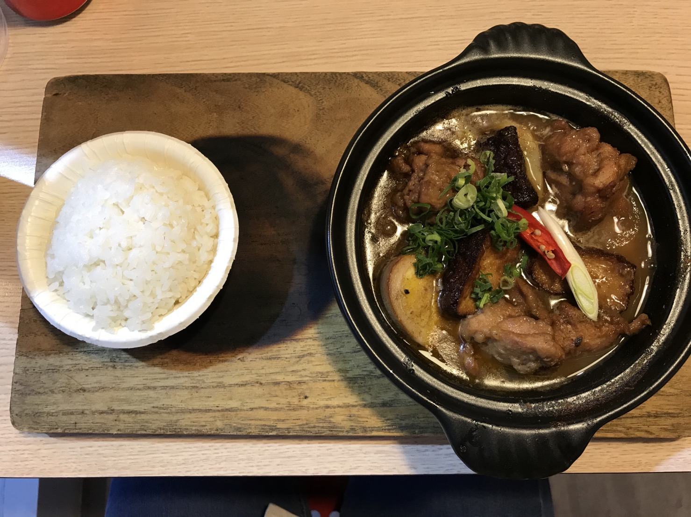
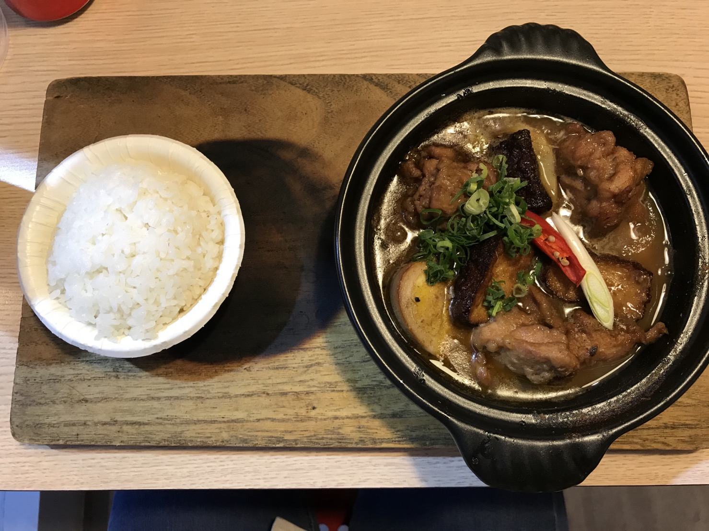
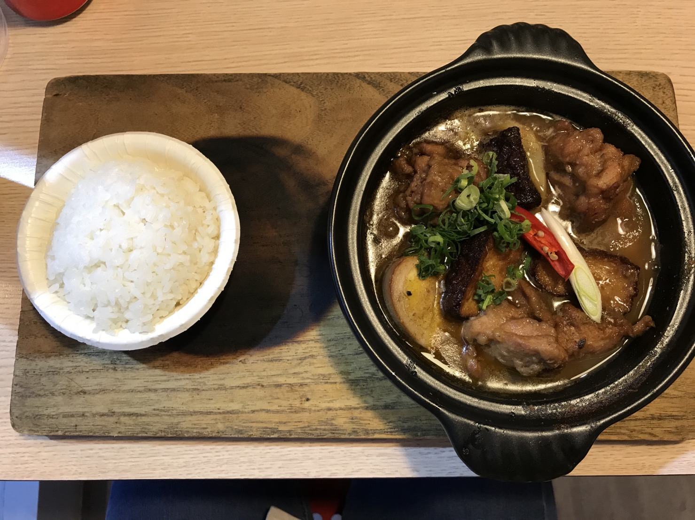

中原的美食太多，每天都好煩惱

茶馬古道

論一間店口味不是很特別但還是願意去吃的店，非茶馬古道莫屬啦！老闆可愛到願意時常去光顧(灬ºωº灬) 既然都說口味還行了，那我們就著重講老闆好了(到底多喜歡老闆(๑¯∀¯๑))老闆是個很有個性的頭家，秉持著自己的一套原則， 從不怕得罪客人，該講就講的態度讓我超欣賞的啦(還是其實我是抖M)！主餐偏油膩，但是他的炸物一級棒！尤其是甜不辣，30元一盤 就超滿，可以跟朋友一起分食，環境也很乾淨，因是小本生意，平常就只有老闆一個人在店裡忙活，有種看到自己家的頑固老爹在廚房煮飯的感覺(▰˘◡˘▰)
推薦指數：⭐⭐⭐⭐ cp值：⭐⭐⭐⭐⭐ 營業時間：12:00~???